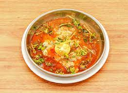

Brain Nihari

-
About Brain Nihari
-
Nihari is a stew originating in Lucknow, the capital of 18th-century Awadh under the Mughal Empire in the
Indian subcontinent.
It consists of slow-cooked meat, mainly a shank cut of beef and its brain.
It is flavoured with long pepper, a relative of black pepper.
Go Back